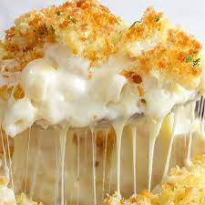

Description
Quick, easy, and tasty macaroni and cheese dish. Fancy, designer mac and cheese often costs forty
or fifty dollars to prepare when you have so many exotic and expensive cheeses, but they are not always
the best rating.
This simple recipe is cheap and tasty.
Ingredients
- Elbow macaroni
- Butter
- All-purpose flour
- Salt
- Ground black pepper
- Milk
- Cheddar cheese
Steps
- Bring a large pot of slightly salted water to a boil. Cook elbow macaroni in the boiling water,
stirring occasionally until cooked through but firm to the bite, 8 minutes.
- At the same time, melt butter in a saucepan over medium heat. Add flour, salt, and pepper and stir
until smooth, about 5 minutes. Pour in milk slowly, while stirring continuously. continue to cook
and stir until mixture is smooth and bubbling, about 5 minutes, making sure the milk doesn't burn.
- Add cheddar cheese and stir until melted, 2 to 4 minutes.
- Drain macaroni and fold into cheese sauce until coated.